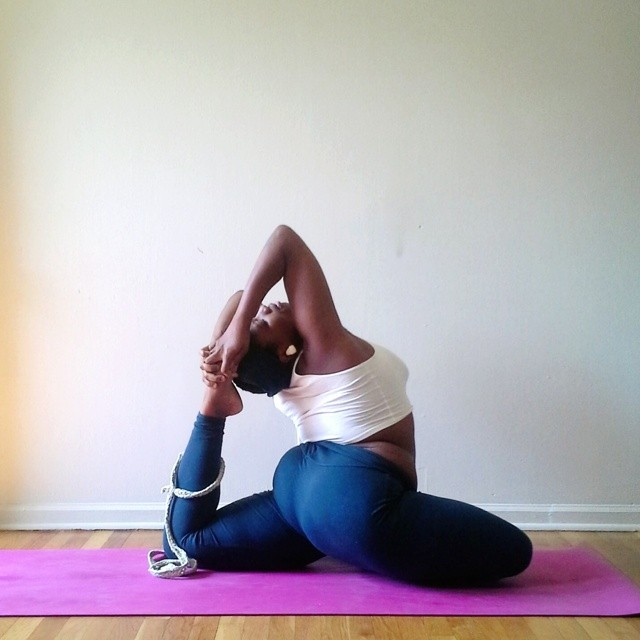
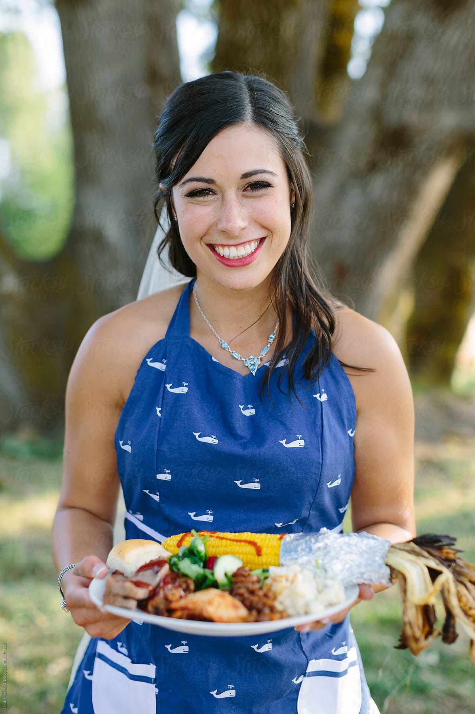
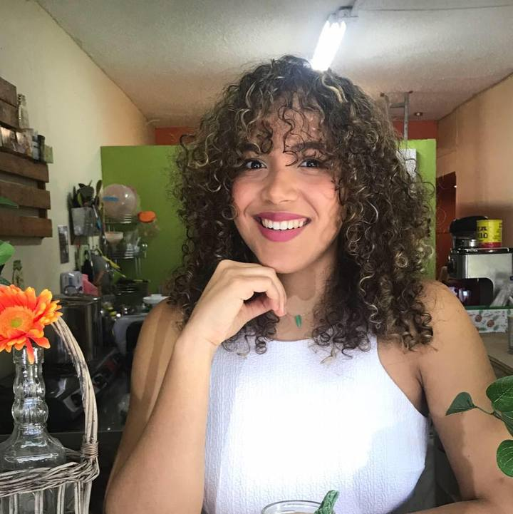
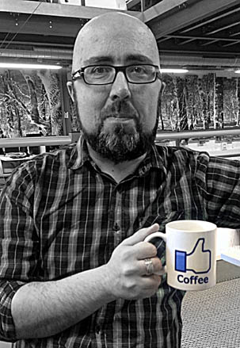

SOBRE NOSOTROS
Somos Yuretzi, Paz y Mariela, nos conocimos en un taller de alimentacion ayurveda, y despues de años de amistad, decidimos llevar a cabo este proyecto, primero como un sueño y luego como una realidad.
¿QUIENES SOMOS?

Yuretzi Vazquez
Instructora de Yoga
"Me formé muchos años en el exterior, y descubri una pasión por el yoga y la meditación"

Paz Bermudez
Chef Cocina Naturista
"Nutricionista devenida en chef naturista y ayurveda en desarrollo"

Mariela Rodriguez
Reikista
"Curiosa por naturaleza, en constante movimiento, siempre dentro de lo holístico"

Gustavo Schullman
Community Manager
"Recibido en la UCA en Cs Sociales y de la comunicación"